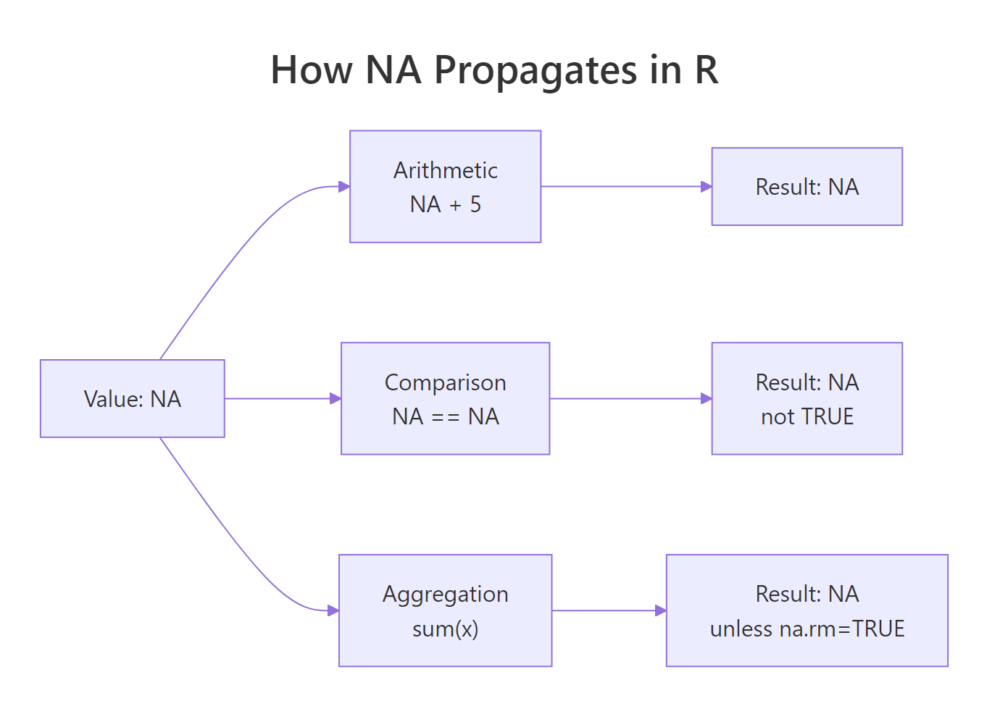
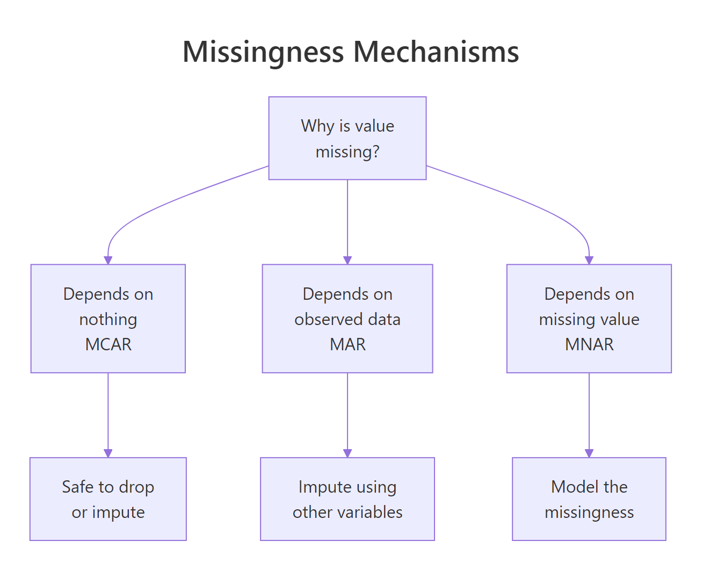
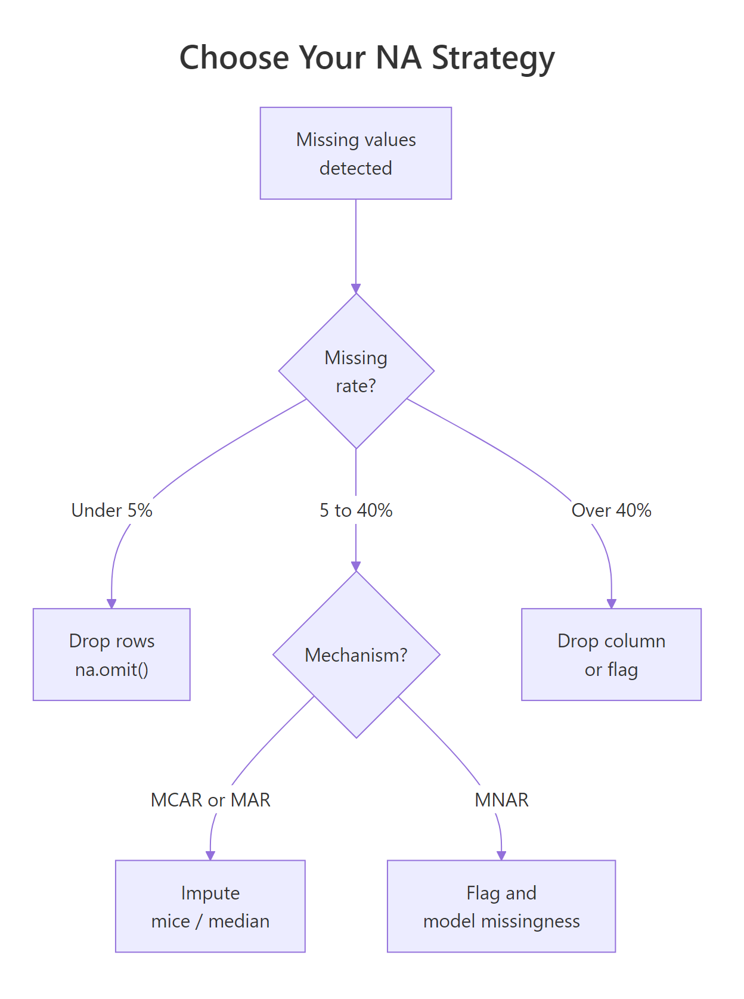

Missing Values in R: Detect, Count, Remove, and Impute NA — Complete Playbook
Missing values in R show up as NA. They silently propagate through arithmetic, summaries, and models — so every real analysis starts by detecting them, deciding what they mean, and either removing or imputing them. This post is the complete playbook.
Why do NA values break your calculations?
A single NA in a vector can make mean(), sum(), sd(), and most statistical functions return NA. That behavior is intentional: R refuses to silently pretend the missing data is zero. The fix is almost always a na.rm = TRUE argument, but the bigger question is why the NAs are there and what they mean. Here is the payoff scenario.
Every R user hits this in their first week. The rule is simple: any arithmetic touching an NA produces an NA, unless you explicitly say "drop them". That propagation is a feature — it stops you from accidentally computing a mean that ignores 30% of your data without noticing.

Figure 1: NA propagation through R operations. Any expression that touches NA returns NA unless you opt out with na.rm or equivalent.
Try it: Compute the mean and sum of this vector, dropping NAs.
Click to reveal solution
na.rm = TRUE drops the NA entries before the reduction runs, so the mean is computed over the four observed values (5+10+15+20)/4 = 12.5. Leave na.rm off and you'd get NA back, because R refuses to guess what the missing values are.
How do you detect missing values with is.na() and complete.cases()?
The three workhorse functions are is.na(), complete.cases(), and anyNA(). Each answers a slightly different question.
is.na(x) returns a logical vector — one TRUE per missing element. anyNA(x) is a fast shortcut for "is there at least one?". Summing the logical is the standard way to count.
For data frames, complete.cases() answers "which rows have no NAs at all?".
Bilal is missing age; Cleo is missing score; both rows are dropped when you subset with complete.cases. The alternative na.omit(df) does the same thing in one call.
==. NA == NA returns NA, not TRUE. Always use is.na(). The expression x == NA is one of the most common R bugs.Try it: How many rows in this data frame are missing at least one value?
Click to reveal solution
complete.cases(df) returns TRUE only for rows that are complete across every column, so negating it flips it to "has at least one NA". Summing the logical counts those rows — here rows 1, 3, and 4 each contain exactly one NA, so 3 rows are incomplete.
How do you count and visualize missingness?
Before you fix NAs, you need to know how many there are, where they are concentrated, and whether they occur together. A single count is rarely enough.
colSums(is.na(df)) is the dense summary. colMeans(is.na(df)) gives you the percentage directly because the mean of a logical vector is the proportion of TRUEs.
For visualization, the naniar package is the go-to:
These charts make it obvious when two columns tend to be missing together — a signal that the missingness has a structural cause (say, a follow-up question that is only shown if the first question was answered).

Figure 2: The three missingness mechanisms. Diagnosing which one applies drives whether you can safely remove or must impute.
Statisticians distinguish three mechanisms:
- MCAR (Missing Completely At Random): the reason for missingness is unrelated to any variable. Safe to delete.
- MAR (Missing At Random): missingness depends on observed variables, not the missing values themselves. Imputation works.
- MNAR (Missing Not At Random): missingness depends on the missing value itself. Hard — needs modeling assumptions.
Try it: Compute the percentage missing for each column in the airquality dataset.
Click to reveal solution
is.na(airquality) returns a logical matrix with TRUE wherever a value is missing. colMeans() averages each column — for a logical vector, the mean is the proportion of TRUEs, so multiplying by 100 gives the percent missing per variable. Here Ozone is missing 24% of the time and Solar.R under 5%.
When should you remove rows with NA?
Removal — "listwise deletion" in stats jargon — is the simplest option. It works when NAs are rare, when the missingness is MCAR, and when you can afford to lose some sample size. The three main tools are na.omit, complete.cases, and drop_na from tidyr.
drop_na() in tidyr accepts a column selector, so you can drop rows where a specific column is NA while keeping rows that are missing elsewhere. This is much more surgical than na.omit.
When to remove? Three rules of thumb:
- The column has <5% missing and the missingness looks random.
- The row is missing the target variable in a supervised model (you cannot learn from a row with no label).
- You have plenty of data and your analysis is not sensitive to a small sample reduction.
Try it: Drop rows where score is NA but keep rows missing age.
Click to reveal solution
Passing score as a bare column name to drop_na() scopes the NA check to that column only — row "A" is dropped because its score is missing, but row "B" survives even though its age is NA. This surgical pattern is how you preserve rows that still hold useful information in unaffected columns.
When should you impute instead of remove?
Imputation replaces missing values with plausible estimates. You impute when:
- The fraction missing is large (say >20%) and deleting would gut the sample.
- Missingness is MAR rather than MCAR — random deletion would bias results.
- The downstream model or visualization requires complete cases and you cannot afford to drop rows.
- You have enough information in other columns to reasonably predict the missing values.

Figure 3: A decision tree for choosing between removing rows, simple imputation, and multiple imputation. Each branch has a rule of thumb you can apply.
The simplest imputation is mean or median replacement for numeric variables, and mode (or "missing" category) replacement for categoricals. It is quick and works when missingness is modest.
Simple imputation has one big drawback: it underestimates variance. Every imputed value is pushed toward the center, so downstream standard errors are too small. For small exploratory analyses this is fine. For inferential work, use multiple imputation.
Try it: Impute missing x values with the column mean.
Click to reveal solution
mean(df$x, na.rm = TRUE) is (10+20+30)/3 = 20, and ifelse() substitutes that value wherever is.na(df$x) is TRUE while leaving observed values unchanged. Simple and fast — just remember that filling with the mean shrinks variance, which matters once you start computing standard errors.
What imputation strategies are available in R?
From simplest to most sophisticated:
1. Mean / median / mode — one-liner with ifelse and mean() / median(). Fine for exploratory work; biased for inference.
2. Last observation carried forward (LOCF) — useful for time series:
3. Linear interpolation — also for time series:
4. k-Nearest Neighbors imputation — fills missing values using similar rows:
5. Multiple Imputation with mice — the gold standard for inference. It creates several imputed datasets, runs the analysis on each, and pools the results so standard errors correctly reflect the uncertainty added by imputation.
mice uses predictive mean matching ("pmm") by default, which imputes each missing value by drawing from observed values whose predicted values are close. It handles mixed variable types (numeric, factor, binary) with sensible per-type methods.
6. Random Forest imputation — missForest package. Fast and non-parametric:
mice once you know the dataset matters. For most real projects, mice is the right default — it is correct, it is flexible, and the output format is designed for standard regression workflows.Try it: Use na.approx from zoo to linearly interpolate the missing values in this time series.
Click to reveal solution
na.approx() draws a straight line between each pair of observed values and fills the gap with the intermediate points. Between 5 and 20 the two missing slots become 10 and 15 (evenly spaced), and between 25 and 35 the single gap becomes 30 — use this whenever the underlying process looks locally linear.
How do you avoid creating NAs accidentally?
Many NAs in a dataset are your own fault — introduced by a type conversion, a failed parse, or a failed join. Four common causes and their fixes:
1. Failed as.numeric on non-numeric strings:
Fix: clean the strings first with gsub / stringr, or use readr::parse_number which strips non-numeric characters before parsing.
2. Failed date parse:
Fix: check sum(is.na(result)) right after parsing and decide whether to log, fix, or drop.
3. Unmatched rows in left_join:
Row with id = 3 has no match in b, so extra becomes NA. This is by design — left joins preserve all left rows and fill missing with NA. If you expected all rows to match, validate with anti_join(a, b, by = "id") to find the unmatched ones.
4. Division by zero or log of zero:
These produce -Inf, Inf, or NaN — not NA. But they behave similarly in downstream calculations. is.finite() is stricter than is.na() and catches all three.
NaN (Not a Number) and NA are different. is.na(NaN) returns TRUE but is.nan(NA) returns FALSE. For most data cleaning, is.na() is what you want — it covers both.Try it: Check the vector below for NA, NaN, and non-finite values using is.na and is.finite.
Click to reveal solution
is.na() returns TRUE for both NA and NaN (R treats NaN as a kind of missing), but FALSE for Inf and -Inf. is.finite() is stricter: only real, non-infinite numbers pass — this is the check you want before feeding a vector to a model that will choke on infinities.
Practice Exercises
Exercise 1: Summarize missingness
Given the built-in airquality dataset, compute a tibble with columns variable and pct_missing, sorted descending.
Solution
Exercise 2: Targeted drop + impute
Drop rows where Ozone is missing. Then impute remaining NAs in Solar.R with the column median.
Solution
Exercise 3: Compare removal vs imputation
For the airquality dataset, compute the mean of Ozone (a) after listwise deletion of all incomplete rows, and (b) after median imputation. How much do they differ?
Solution
Complete Example
End-to-end pipeline on a messy survey dataset: detect, summarize, decide, and impute.
Four steps: diagnose → drop where required → impute the rest → verify. Every real missing-data workflow looks like this, whether you are using simple median imputation or mice.
Summary
| Task | Function | Package |
|---|---|---|
| Test for NA | is.na() |
base |
| Any NAs? | anyNA() |
base |
| Count NAs | sum(is.na()) |
base |
| Complete rows only | complete.cases() / na.omit() |
base |
| Drop rows with NA | drop_na() |
tidyr |
| Column-wise percent | colMeans(is.na()) |
base |
| Visualize pattern | vis_miss() / gg_miss_var() |
naniar |
| Time-series carry | na.locf() |
zoo |
| Time-series interp | na.approx() |
zoo |
| k-NN impute | kNN() |
VIM |
| Multiple imputation | mice() + pool() |
mice |
| Random forest impute | missForest() |
missForest |
Four decision rules:
- NA propagates. Any calculation touching NA returns NA unless you opt out.
- Diagnose before deciding. Count, visualize, and think about the mechanism first.
- Remove sparingly. Only when the drop is small and looks random.
- Impute thoughtfully. Start with median; upgrade to
micewhen the stakes rise.
References
- Hadley Wickham and Garrett Grolemund, R for Data Science, 2e — Missing Values
- Stef van Buuren, Flexible Imputation of Missing Data
- mice package documentation
- naniar package documentation
- zoo package vignette on NA handling
Continue Learning
- Tidy Data in R — tidy data makes missing value handling much simpler.
- dplyr filter() and select() — pair with
is.na()for targeted row selection. - dplyr mutate() and rename() — where imputation lives in a pipeline.